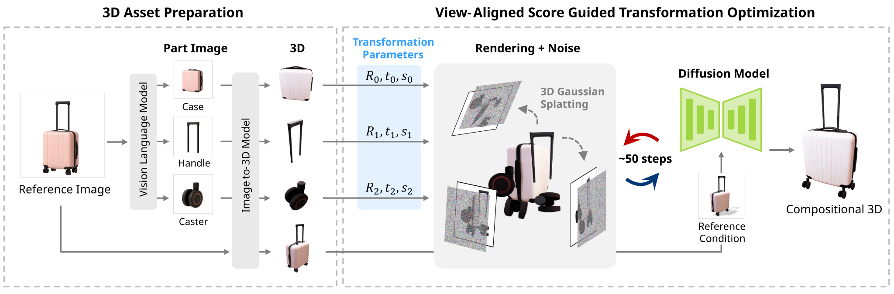

Preprint
VA-Assembly: View-Aligned Score Guidance for Training-Free 3D Part Assembly
Training-free 3D part assembly using view-aligned diffusion guidance to optimize part translation, rotation, and scale.
Overview
VA-Assembly studies how separately prepared 3D parts can be arranged into a compositional object using a reference image. The method optimizes each part’s translation, rotation, and scale without task-specific model training.
Key idea
Use view-aligned diffusion guidance to connect the appearance of a rendered assembly with the arrangement of its 3D parts.
Prepare parts
Build the 3D assets from part images associated with the reference object.
Render the assembly
Render the current part arrangement to provide a visual representation for guidance.
Refine transformations
Use view-aligned score guidance to optimize part positions, orientations, and scales.
Method
The framework connects 3D asset preparation with iterative transformation optimization. The diagram shows the reference input, part representations, rendering, and diffusion-guided update process.
